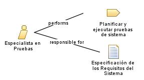

| Role: Especialista en Pruebas |
| |
 |
| Se encarga de asegurar la calidad y funcionalidad del software a través de pruebas exhaustivas. |
| Synonyms: Ingeniero de pruebas, Analista de
calidad |
|
Relationships
 |
| Primary Performs |
|
| Modifies |
|
Main Description
|
El especialista en pruebas se enfoca en diseñar y ejecutar pruebas específicas para el módulo de facturación y
contabilidad, verificando que las funcionalidades relacionadas con la facturación, cálculos financieros, generación de
informes y otros aspectos contables funcionen correctamente. Su objetivo principal es detectar posibles errores o
deficiencias en el sistema y colaborar con el equipo de desarrollo para corregirlos y mejorar la calidad general del
módulo. |
Staffing
| Skills |
Experiencia en el uso de herramientas de automatización de pruebas, Habilidades de análisis y resolución de problemas,
Capacidad para comunicarse efectivamente y colaborar con el equipo de desarrollo y los stakeholders. |
| Synonyms | Ingeniero de pruebas, Analista de
calidad |
|